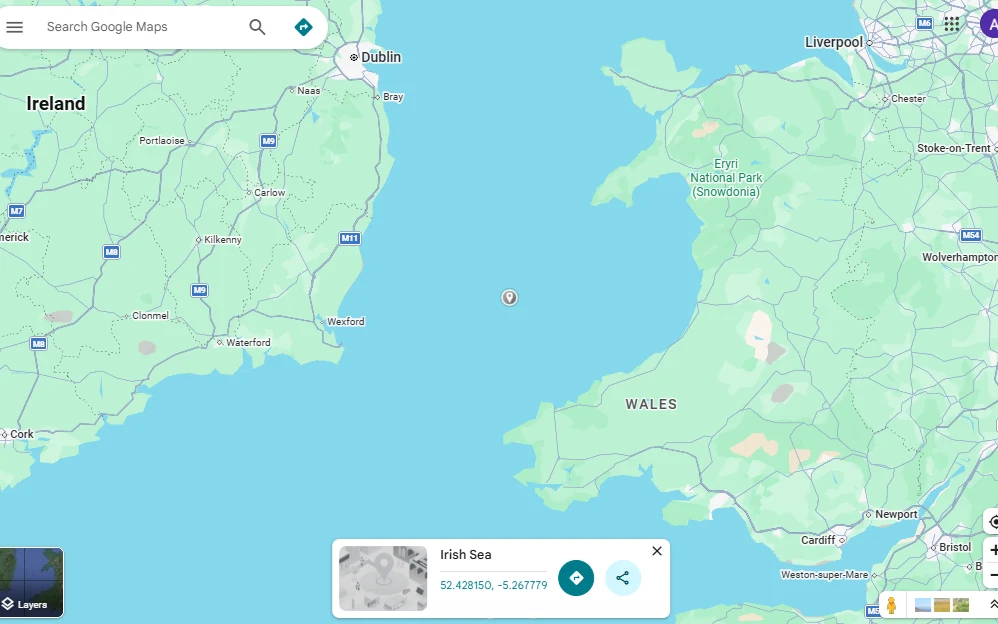

A LITTLE ABOUT SUNRISE
WE BELIEVE COFFEE ☕ IS MORE THAN
JUST A DRINK. IT’S A DAILY RITUAL,
A MOMENT OF COMFORT, & A SOURCE
OF INSPIRATION.
A bright, welcoming neighbourhood spot for artisanal espressos, fresh-baked pastries, and hearty breakfast bowls. Catch the morning light, catch up on work, or catch up with friends.
Make yourself at home ↗MORE THAN YOUR MORNING COFFEE
YOUR LITTLE CORNER
OF COMFORT.
Start with a good cup
From a simple coffee to a caramel latte, find your favourite daily ritual.
Stay for a while
A welcoming space to catch up with friends or settle into your own company.
MAKE TIME
FOR YOU.
FOR YOU.
Something on the side
Come by for fresh-baked pastries and hearty breakfast bowls.
A brighter kind of day
Morning light, a warm smile, and a cosy corner to make yourself at home.
WE’LL PUT THE COFFEE ON
SLOW DOWN.
STOP BY.
STAY A LITTLE.
Find a peaceful spot to unwind, enjoy a freshly brewed coffee, and take in the surroundings.
OPENING HOURS9:00 – 16:00
GIVE US A CALL+4474383954582 ↗

☀ SUNRISE CAFÉ52.428150, −5.267779